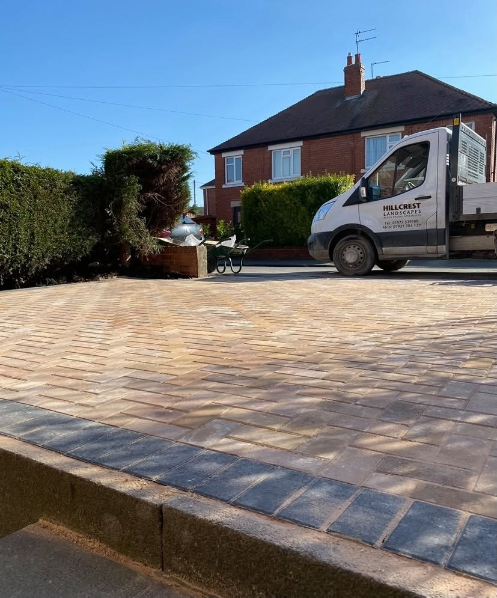
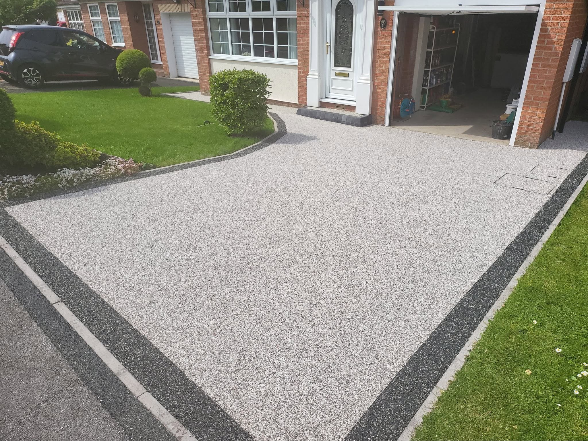
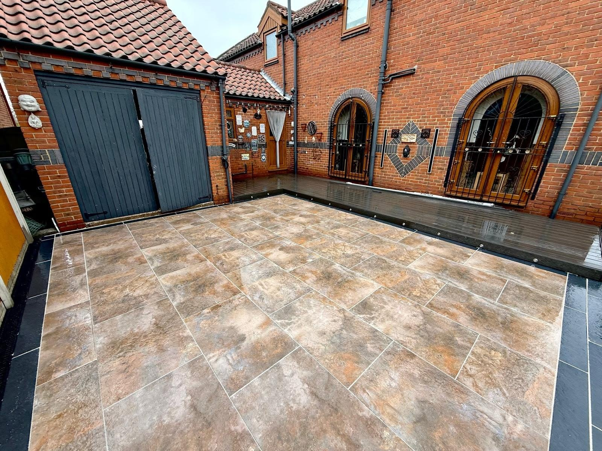
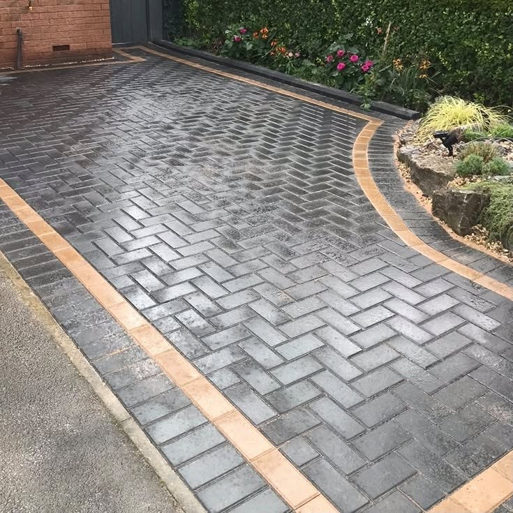
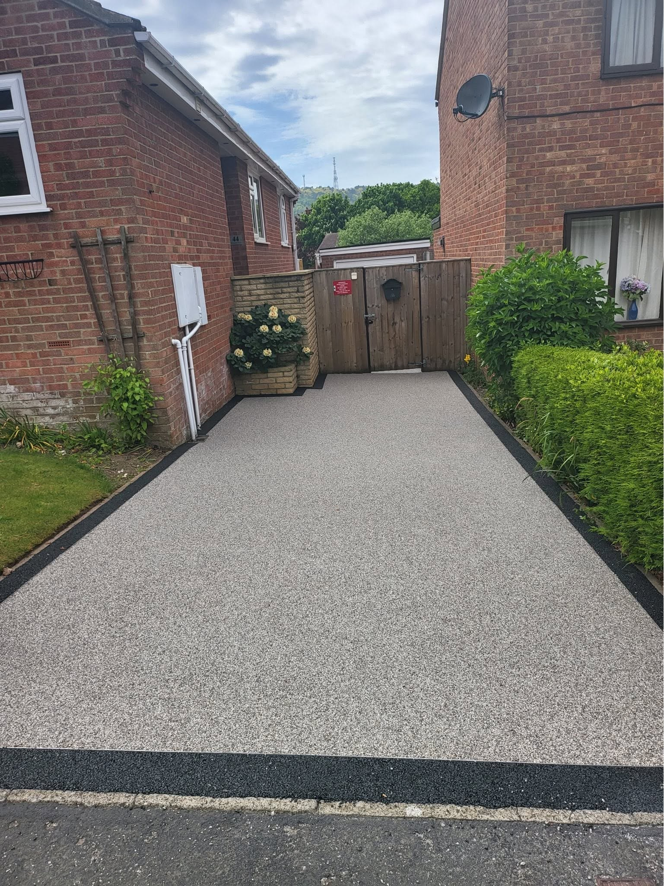
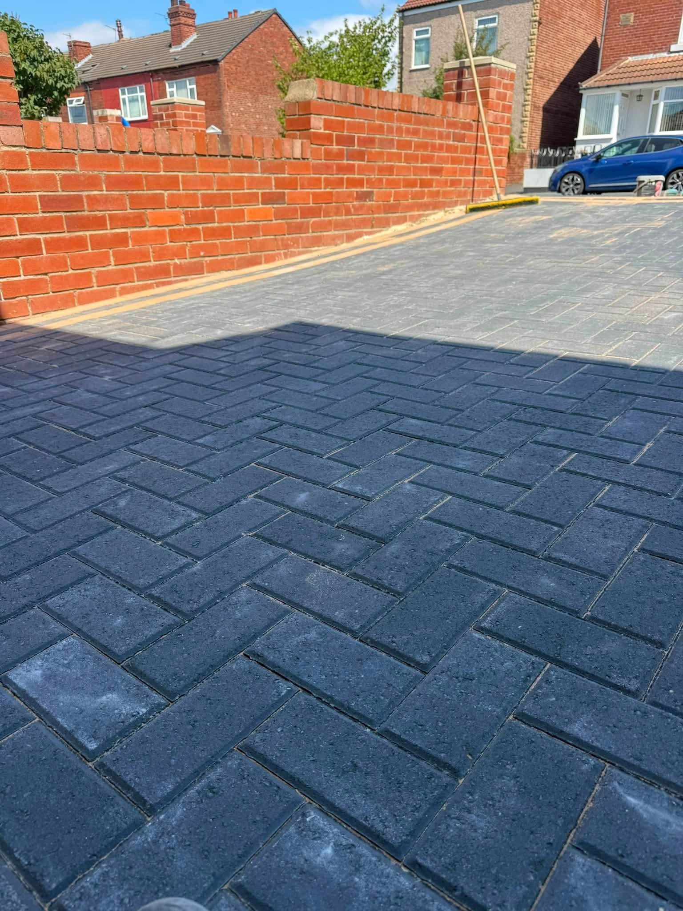
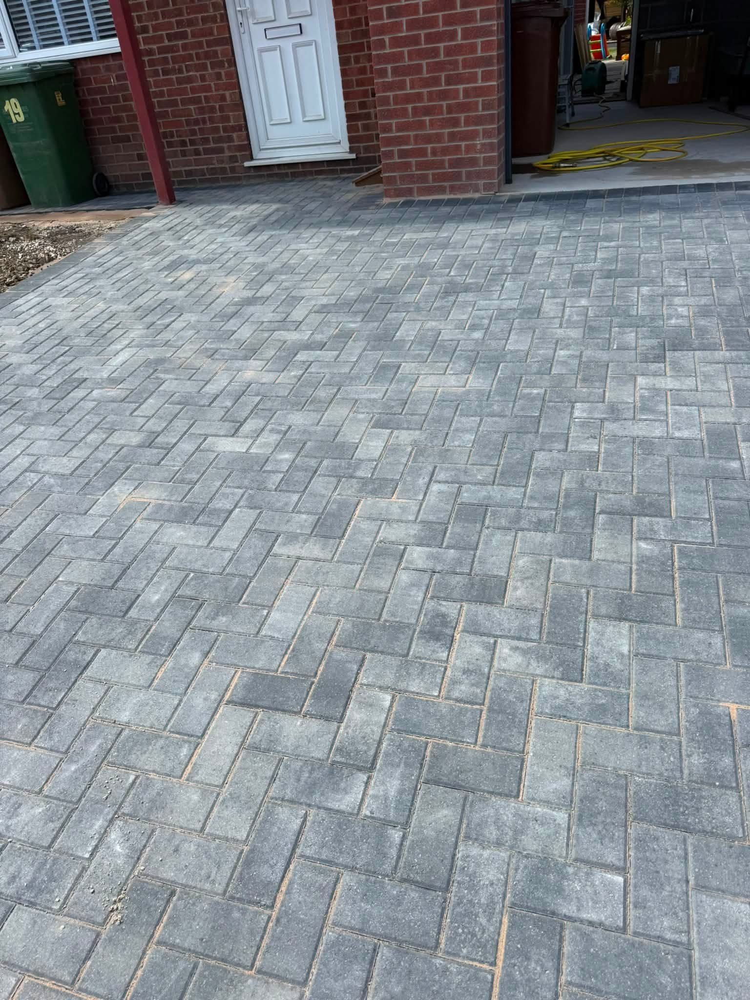

DrivewaysBlock paving and resin-bound finishes
CASTLEFORD · FAMILY-RUN LANDSCAPING
Better spaces start outside.
Driveways, patios, paving and garden landscaping built to make more of your property. Speak to Hillcrest about the space you have in mind.
DrivewaysPatios & PavingArtificial GrassDecking
Patios & PavingOutdoor seating and garden paths
Artificial GrassLow-maintenance garden areas
DeckingUsable outdoor living space
DRIVEWAYS & FIRST IMPRESSIONS
Arrive home to a better finish.
Hillcrest's supplied photographs show clean block paving, resin-bound surfaces and well-defined edges. From a narrow entrance to a wide frontage, the surface should work for the home and stand up to everyday use.
Discuss your driveway →

PATIOS & OUTDOOR LIVING
Give the garden a place to gather.
A paved patio makes outdoor space easier to use. The supplied project photos include a warm-toned patio beside a brick home and carefully laid block paving with contrasting borders.
Ask about patios →

RECENT WORK
Paving that speaks for itself.
Project photos supplied for Hillcrest Landscapes.


CHOOSING A FINISH
Different surfaces. The same attention to detail.
Block paving and resin create different looks. Talk to Hillcrest about the surface, border and layout that suits your home.
Talk through your options →
CASTLEFORD LANDSCAPING
Local work with a clear finish.
Hillcrest Landscapes describes itself as a family-run business serving Castleford and surrounding areas, specialising in driveways, artificial grass, patios, decking and paving.
01
Family-run
A local landscaping business for outdoor projects.
02
Driveway finishes
Project photos show block paving, resin and contrasting edges.
03
Garden spaces
Patios, paving, artificial grass and decking.
REQUEST A QUOTE
Tell Hillcrest about your project.
Complete the form and WhatsApp opens with your details ready to send. This is a quote request, not a confirmed booking.
HILLCREST LANDSCAPES
Ready to improve your outdoor space?
Castleford & surrounding areas · hand.c@sky.com